5.1.7. FOC 与六步控制的比较¶
永磁同步电机的 FOC 与六步控制之间存在若干折中。如 概述一节所述，FOC 在性能上带来若干改进，缺点较小，但代价是设计和实现复杂度的增加：
5.1.7.1. 转矩能力¶
5.1.7.1.1. 由角度误差引起的转矩下降¶
理想的 FOC 使定子磁场与转子磁通保持垂直。 [1] 需要估计转子角度（对于感应电机，还包括转子磁通）。FOC 中的转矩正比于 \(I_q \cos\tilde{\theta}\)，其中 \(\tilde{\theta}\) 为相对于理想垂直的角度误差。
在 FOC 中， \(\cos\tilde{\theta}\) 项通常非常接近 1。
在六步控制中， \(\tilde{\theta}\) 无法保证优于 30°。这是因为六步控制中的电流矢量固定在每个 60° 扇区的中心，如 图 5.36 和 图 5.37所示，且每个扇区至少有一条边界处的角度误差为 30° 或更大。
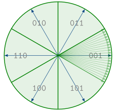
图 5.36 六步控制的扇区¶
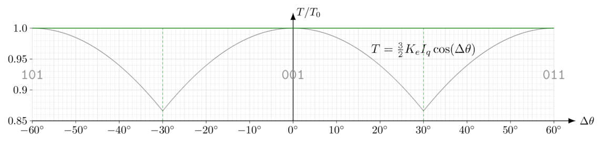
图 5.37 在精确获知扇区边界时六步控制中转矩随角度误差的变化¶
六步扇区边缘附近的这种转矩下降是显著的。在高速下，惯性会平滑转矩的高频分量，只有 \(\cos\tilde{\theta}\) 的平均值影响系统：在扇区完全对齐时，对于相同的电流限幅，六步控制的平均转矩为理想 FOC 转矩的 95.5%：六步转矩约低 4.5%。
在低速下，这种平均效应不存在，六步控制的最佳情形是扇区边缘处的转矩为相同电流限幅下 FOC 转矩的 86.6%。角度检测的误差（例如霍尔传感器未对齐）会进一步降低该值，且转矩随角度误差增大而迅速下降。当负载转矩较高时，这可能使电机“卡”在扇区边缘，无法克服负载转矩。
FOC 也会出现角度误差，但误差的影响不那么显著。需要约 17.3° 的角度误差才能使 FOC 转矩下降相同的 4.5%。 图 5.38 展示了两种情况下 4° 电角度误差的影响：
FOC 损失约 0.24% 的转矩
六步平均损失约 0.24% 的转矩（在扇区完全对齐时 4.5% 损失之外），但在扇区一端还会再多损失几个百分点。
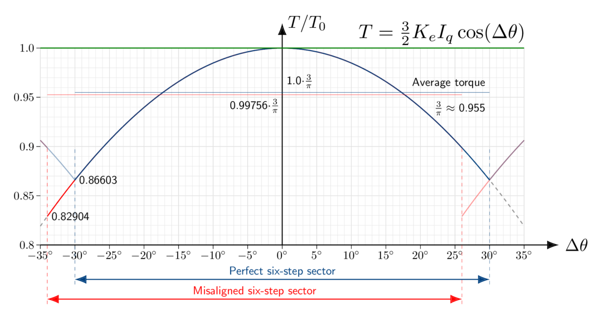
图 5.38 在未精确获知扇区边界时六步控制中转矩随角度误差的变化¶
注
5.1.7.1.2. 由换相动态引起的转矩下降¶
随着换相角变化，FOC 提供的电压随电角度连续变化，并自动补偿定子电感造成的相位滞后。（在稳态下，需要一定的电压分量来改变定子绕组中的电流；参见 相量分析 以获取更多信息）
六步换相的缺点是必须以离散跳变的方式移动电流矢量，每次在换相扇区之间切换时跳变 60°。在低速下，这会在每次扇区切换时产生一个非常短暂的转矩暂态，通常伴随轻微的“滴答”声。
在更高转速下，六步换相有两个主要缺点：
换相时刻出现得更频繁（电频率更高）
可用于换相的电压减少（反电动势消耗了更多电压）
换相暂态不再可忽略；每个扇区有相当一部分时间用于使电流矢量移动。由于电机在更高的电频率下运行，每个扇区的总时间减少。峰值电流需求略有增加，以补偿每个扇区开始时损失的转矩，这会增大转矩脉动。随着反电动势需求增加，可用电压裕量减小，意味着电流暂态耗时更长。到某一时刻，整个换相扇区都用于提升电流，六步控制便限制了可用电流。
图 5.39， 图 5.40， 图 5.41，以及 图 5.42 通过一个 Nidec Hurst DMA0204024B101 在换相频率递增时的仿真展示了这一趋势。
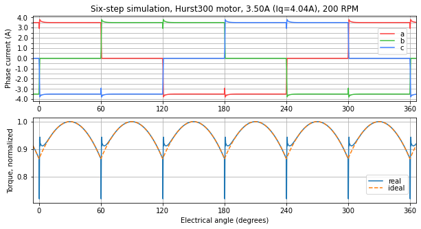
图 5.39 200 RPM 时的仿真——换相暂态非常短¶
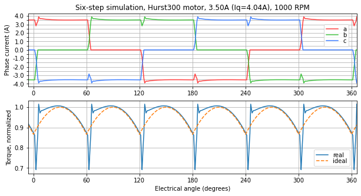
图 5.40 1000 RPM 时的仿真——换相暂态较短但可见¶
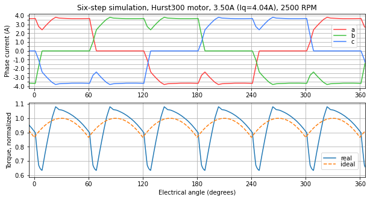
图 5.41 2500 RPM 时的仿真——换相暂态占整个扇区时间的三分之一以上，稳态电流必须略高以补偿 PI 控制的暂态¶
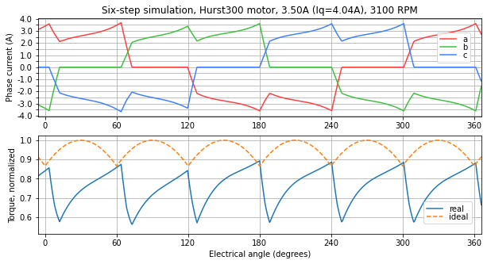
图 5.42 3100 RPM 时的仿真——由于电压限制，整个换相扇区都用于提升电机电流，且始终无法完全达到指令电流¶
图 5.43， 图 5.44，以及 图 5.45 展示了由 dsPIC33CK 低压电机控制（LVMC）开发板 驱动、以六步方式运行的 Nidec Hurst DMA0204024B101 的实测电流波形。该 Microchip AN957 的代码是一款不使用电流环的六步电机控制器，而是在估计速度外围绕一个较慢的 PI 环，因此其换相切换比上文仿真中的对应过程耗时更长。在这些测试中，电机的机械负载近似恒定，因此在更高转速下需要更大的电流来克服六步暂态效应并输出相同的机械转矩。
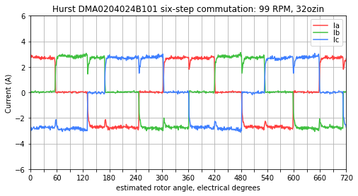
图 5.43 约 100 RPM 时的实测电流——六步电流保持得相当平稳¶
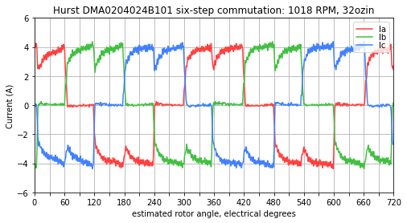
图 5.44 约 1000 RPM 时的实测电流——需要相当一部分扇区时间才能使电流达到稳态值¶
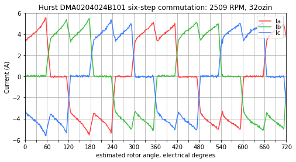
图 5.45 约 2500 RPM 时的实测电流——指令电流上升，控制环路用尽所有可用电压，但在每个扇区结束时仍无法达到稳态值。¶
FOC 的连续换相能在高速下实现更高的电流，更好地利用可用电压，并将转矩脉动降至最低。
5.1.7.2. 转矩脉动¶
在 FOC 稳态下（恒定转速和负载转矩），只要电流控制器能维持恒定的电流矢量 Idq，电机转矩脉动即为零。
六步转矩脉动受两个因素影响：
即 \(\cos \theta\) 恒定电流下的转矩依赖关系
使转矩脉动随转速升高而恶化的换相暂态
5.1.7.3. 效率¶
六步的角度误差会在电机绕组中造成额外的 I²R 损耗。在一个电周期内平均——并忽略会使功耗进一步增加的换相暂态动态——对于相同的负载转矩，六步绕组中的 I²R 功耗比 FOC 高约 10%：
\(\left(\frac{\pi}{3}\right)^2 \approx 1.0966\) 在恒定电流假设下——如果电机转速或惯性足够高，或速度控制足够慢，使得指令电流在每个换相扇区内变化不大，则六步的 I²R 损耗比 FOC 高 9.7%。这种情况下的电流如 图 5.46。
\(\frac{2\sqrt{3}}{\pi} \approx 1.1027\) 在恒定转矩假设下——如果电机转速或惯性足够低，或速度控制足够快，使得指令电流在每个换相扇区内变化以保持转矩恒定。（\(I \propto T/\cos\tilde\theta\) 其中角度误差 \(\tilde\theta\) 在 -30° 到 +30° 之间变化）这种情况下的电流如 图 5.47。
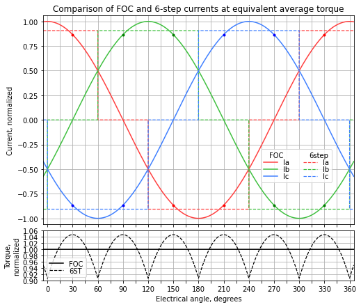
图 5.46 在等效平均转矩下 FOC 与六步电流的比较¶
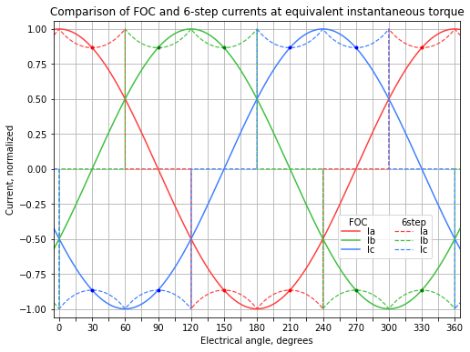
图 5.47 在等效瞬时转矩下 FOC 与六步电流的比较¶
注：这并 不 意味着六步效率低 10%；效率的确切下降取决于电机结构以及效率损耗中阻性（即与 I² 成正比）损耗所占的比例。一台在 FOC 下某种负载工况运行的过大电机，若机械输出功率为 98 W、绕组损耗为 2 W、其他损耗可忽略，则效率为 98%；在相同工况下以六步运行，绕组损耗约增加 10% 至 2.2 W，效率变为 97.8%。
5.1.7.4. 开关损耗¶
与 FOC 相比，六步在 PWM 工作下可通过减少有源切换的晶体管数量来降低开关损耗。
根据所用开关模式的不同，六步需要 1、2 或 4 个晶体管进行有源切换，如 图 5.48所示。每个扇区中有一相未使用，使两个晶体管完全关断。
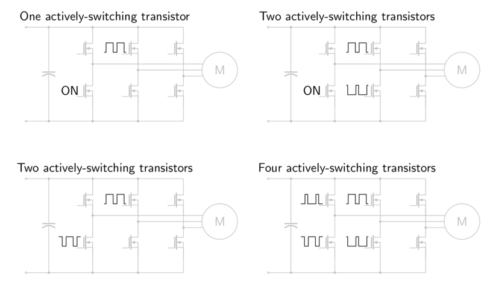
图 5.48 六步开关模式（假设在某换相扇区内 C 相开路）。¶
1 或 2 个有源切换晶体管：取电压最低的电机端子，以 100% 占空比导通该相的下桥臂晶体管。（见 图 5.48顶行。）
1 个晶体管：取电压最高的电机端子，对上桥臂晶体管进行有源切换。（依靠下桥臂晶体管的二极管承载续流电流）
2 个晶体管：对电压最高电机端子的两个晶体管都进行有源切换。
2 或 4 个有源切换晶体管：为两个有源相的上桥臂开关选择互补的 PWM 占空比，例如 A 相 15% 占空比、B 相 85% 占空比。若依靠二极管承载续流电流，两个晶体管即足够。（见 图 5.48顶行。）
FOC 的对应情形为 2、3、4 或 6 个有源切换晶体管，如 图 5.49所示。（通过选取电压最低的电机相并导通其下桥臂晶体管，可使两个晶体管不参与有源切换；剩余有源切换晶体管的数量取决于特定半桥是否使用同步整流。）
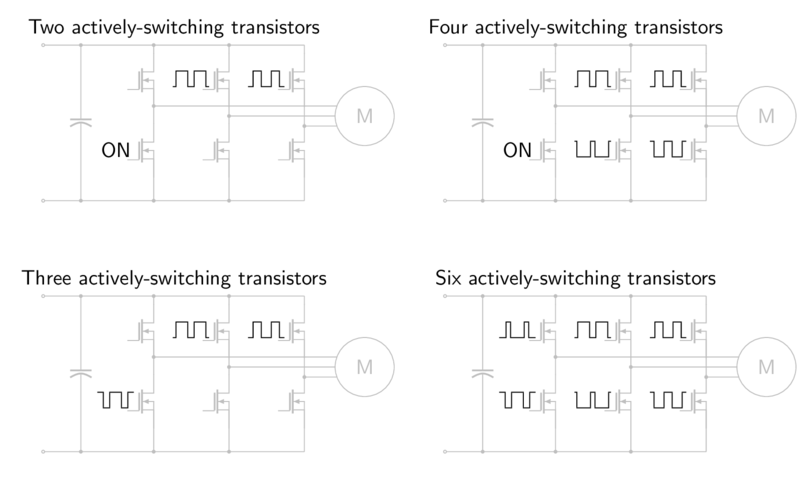
图 5.49 FOC 开关模式¶
这里存在折中：减少有源切换晶体管数量通常会增加电机在开关频率处的纹波电流，或导致功率级二极管导通损耗增大。
在功率级使用 MOSFET 的低压电机驱动中，开关损耗通常远小于导通损耗，没有理由去刻意降低开关损耗。
在使用 IGBT 进行更高电压运行（由交流市电或电动汽车电池供电）的电机驱动中，开关损耗更大，而二极管导通损耗则相对次要。
开关损耗的优化是一项系统级任务：电机控制工程师应与电路设计人员讨论以找到最佳方案。
5.1.7.5. 电流管理¶
除从一个扇区到下一个扇区的换相暂态外，六步可用单个电流来概括：
电压最高的电机端子 H 有电流 I 流入电机端子
电压最低的电机端子 L 有相同的电流 I 流出电机端子
剩余的电机端子 M 开路，流过零电流
FOC 需要知道电流矢量，它有两个自由度（三个相电流之和为零，因此知道其中任意两个即可确定第三个）
5.1.7.5.1. 电流检测¶
由于六步控制只需检测一个电流，因此可使用单个直流电流传感器。
FOC 需要一个、两个或三个电流传感器，取决于所用方法：
三个电流传感器精度最高、噪声最小
两个电流传感器可获知全部三相电流，噪声和增益/偏置精度比三个传感器差，但除此之外无信息损失
可使用单个直流电流传感器（单通道电流测量），但对信号调理和 PWM 占空比有一定约束，且复杂度增加，需在 PWM 周期内的多个时刻采样电流
成本约束严格的系统可能需要使用单个直流电流传感器。（注： 请参见关于 成本优化）
5.1.7.5.2. 电流范围¶
对于相同的瞬时转矩，六步和 FOC 所需的电流范围相同。（见 图 5.47顶行。）
如果不需要等效瞬时转矩，而是想知道在相同平均转矩下电流范围如何比较，则情况发生变化。（见 图 5.46。）对于相同的平均转矩，可为六步和 FOC 写出等效的电流幅值。在六步中，电流 I6 流入电机的一个端子并从另一个端子流出。如果 FOC 电流幅值为 Iq ，则：
对于同一电机，FOC 所需的峰值电流检测范围比六步高约 10.3%。即便六步效率较低也是如此：电流 I6 流入一个端子并从另一个端子流出，其等效的三相电流矢量幅值为 \(\frac{2}{\sqrt{3}}I_6 \approx 1.1547 I_6\)，因此六步电流检测能以更低的峰值电流要求得以规避。
在 FOC 中，电流幅值 I 对应的最坏换相角下的 Iq 是 Iq 流入（或流出）一个电机端子，而该电流的一半从另外两个端子流出（或流入）的情况。该电流幅值对应的最佳换相角是 \(\frac{\sqrt{3}}{2}I_q\) 流入一个电机端子并从另一个端子流出、第三个端子电流为零的情况。然而电流传感器必须覆盖 ±I 的完整范围。
参见 图 5.46 的图形描述；在 30/90/150/210/270/330 度的点处，FOC 电流幅值比等效平均转矩下的六步电流低 4.5%（系数为 \(3/\pi\)），但 FOC 波形在正弦波峰值处需要更高的电流范围。
在实际中，这意味着电流检测电路、过流电路以及（在较小程度上）栅极驱动都需要设计成能覆盖完整的瞬时相电流，因此如果决定因素是平均转矩而非瞬时转矩，六步的要求略低。
由于热原因其额定值更取决于方均根电流的系统部件（如连接器、导线、功率级和电机本身），在六步下比在 FOC 下需要更高的额定值。（见 效率）
5.1.7.6. 成本优化¶
成本优化是一项系统级任务。提升电流检测性能可以提高电机和功率级的利用率，从而真正降低系统总成本。
例如，设想一个数字控制系统，包含一个 50 美元的电机、5 美元的功率电子器件（能承受 10A 连续电流），以及 2 美元、精度在 ±2% 以内的电流检测元件，这要求在最坏情况下将电机降额至仅使用其 9.6A 的能力。（固件中将数字控制限制为 9.8A，这样即使传感器低估电流 2%，也能保证实际电机电流不超过 10A——但如果传感器高估电流 2%，则可能只用到 9.6A。）
如果使用更好的电流检测元件，成本 2.50 美元但精度在 ±0.5% 以内，则可使用一个略小、能承受 9.7A 连续电流的电机，以确保最坏情况下的能力至少为 9.6A。（固件中将数字控制限制为 9.65A，对应实际电流在 9.6A 到 9.7A 之间。）如果最大电流和转矩这 3% 的降低能在电机和功率级成本上节省超过 0.50 美元，那么选择更贵的电流检测元件就是值得的。
那些因为在标称工况下允许使用更便宜的电流检测（更高容差、更少传感器数量）而“省钱”的技术，实际上可能花费更多，因为系统整体设计会看到电机和功率电子器件最坏情况利用率降低，从而需要将其选得更大。
5.1.7.7. 控制复杂度¶
六步控制器可以比 FOC 更简单，只需以下组成部分：
扇区判定
一个标量电流环，或不使用电流控制环
扇区应用（决定如何将电流环输出施加到不同 PWM 相）
FOC 需要矢量电流环和坐标变换——其计算量大约是上述六步各组件总和的 2–3 倍。六步较低的 CPU 占用可使系统设计者对某些类型电机采用更高的 PWM 开关频率和电频率。（更高的开关频率可降低低电感电机的电流纹波；电频率与电机速度成正比，因此高速电机需要更高的电频率。）
此外，如果需要无传感器位置/速度估计器，FOC 的复杂度高于无传感器六步估计器。